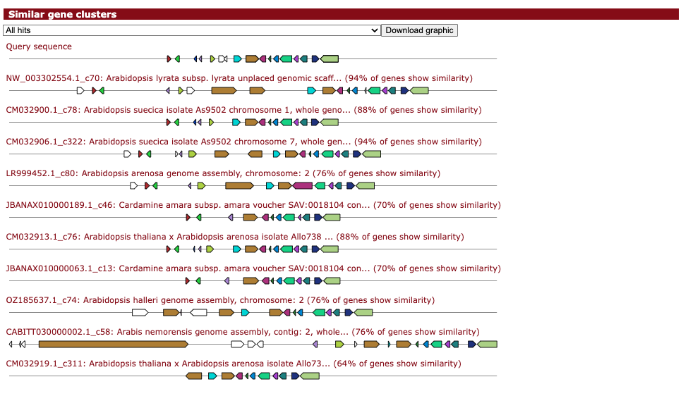

ClusterBLAST#
If you enabled Gene Cluster Comparative Analysis (ClusterBlast), this panel will display the top ten plant gene clusters from the plantiSMASH ClusterBLAST database that are most similar to a detected gene cluster, visually aligned to it. The drop-down selection menu can be used to browse through the gene clusters. Genes with the same colour are putative homologs based on significant Blast (Diamond) hits between them.
The plantiSMASH ClusterBLAST database is defined with a minimum of 2 domains needed from the BGC rules.

Genes with matching colours are interrelated. Percentage identity values per hit are shown when clicking the gene in question, with a minimum percentage identity between genes of 30%.
It is normal to have multiple genes hitting for some types of genes.
ClusterBLAST database#
More information about how to update the clusterBLAST database are available in the plantiSMASH Wiki.
Ranking system#
Reference areas are sorted first based on an empirical similarity score S = h + H + s + S + B, in which:
- h is the number of query genes with a significant hit
- H is the number of core query genes with a significant hit
- s is the number of gene pairs with conserved synteny
- S is the number of gene pairs with conserved synteny involving a core gene
- and B is a core gene bonus
If the similarity scores are equal, the hits are subsequently ranked based on the cumulative BlastP bit scores between the gene clusters.
Similarity percentage#
Similarity in the description, e.g. 87% of genes show similarity,
is the percentage of genes within the reference that have a hit to any genes in the query.
As gene hits are not required to be 100% identity and query genes may hit multiple reference genes, this total similarity percentage is no guarantee that the region is exactly the same. In the case of KnownClusterBlast, this also means that there is no guarantee that the compound(s) recorded for that MIBiG entry will be produce by the region.
Even if 100% of genes have a hit for a reference, it may be less relevant than a lower similarity. Some cluster types, e.g. NRPS clusters, may only need a few aminos changed in gene translations to have a completely different product.
In all cases, manual verification is required before assuming that the region produces the same compound as the reference.
Example 1: low similarity, good match#
Reference area R has 70% of genes showing similarity to the query region Q.
All genes with hits are very high identity in their hits, at 95% or higher.
The missing genes from R are all at one end of the reference area.
These genes are also present in the genome antiSMASH was run on,
but are outside Q due to the size of R being exceptionally large.
After manually checking these extra genes and seeing that they're similar to the missing genes, it's much, much more likely that the genome matches the reference.
Example 2: perfect similarity, poor match#
Reference area R has 100% of genes showing similarity to the query region Q.
None of the genes have a percentage identity in individual hits greater than 60%.
While it is still possible that Q produces the same compound as R,
it will depend a great deal on the type of cluster and exactly which parts of the genes are similar.
Example 3: high similarity, poor match#
Reference area R has very high (but not 100%) similarity, with all but one gene in R having similarity to genes in the query region Q.
All of the matching genes have very high identity in their hits.
The gene in R that is missing in Q should be in the middle of Q and is a core gene responsible for the scaffold of the compound.
While it is still possible that Q produces the same compound as R, due to the functionality being present elsewhere, but it is much less likely.